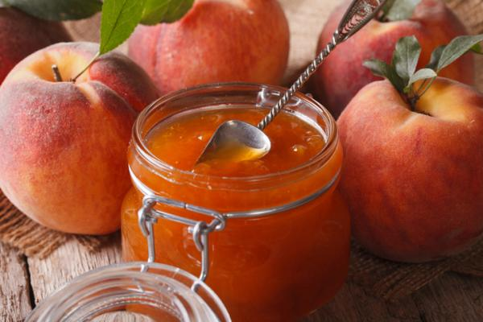

◖Coffrey◗
Mermelada de durazno
Ingredientes:
1 1/2 kilos de duraznos
1 kilo de azúcar
1 taza de agua
1 raja de canela
Preparacion:
Pela los duraznos, quítales el hueso, córtalos en cuartos y colócalos en un recipiente en capas, alternando con el azúcar.
Después, déjalos macerar por 1 hora y cocina a fuego alto durante 10 minutos. Agregar el agua y la canela.
Luego prosigue la cocción a fuego suave, revolviendo con una cuchara de madera cuando comience a espesar.
Cuando este espesa, deja en el fuego por 10 minutos más y retira del fuego. Deja enfriar y servir.
